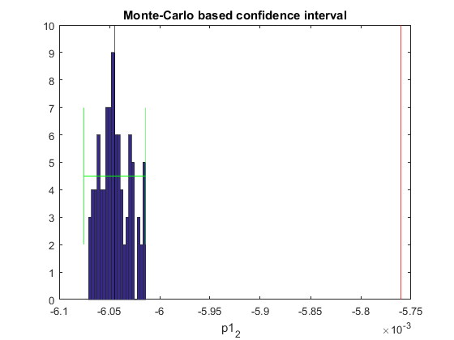
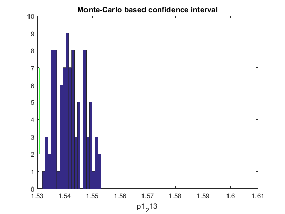
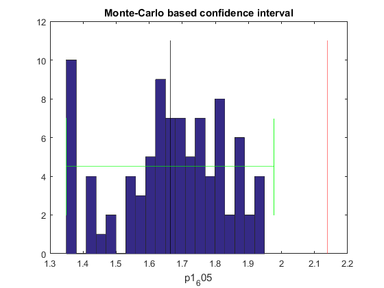
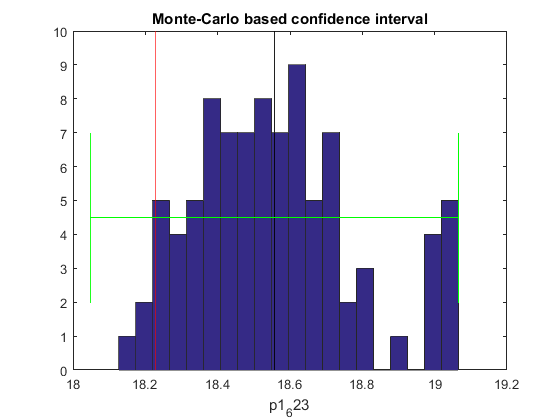
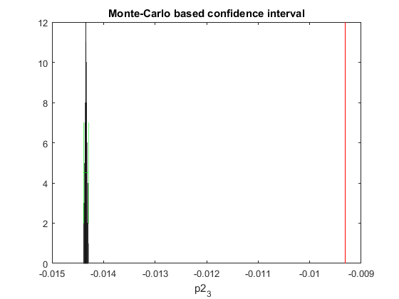
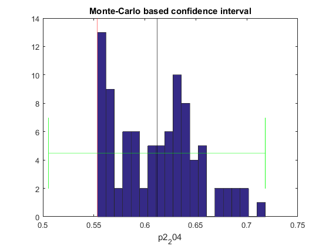
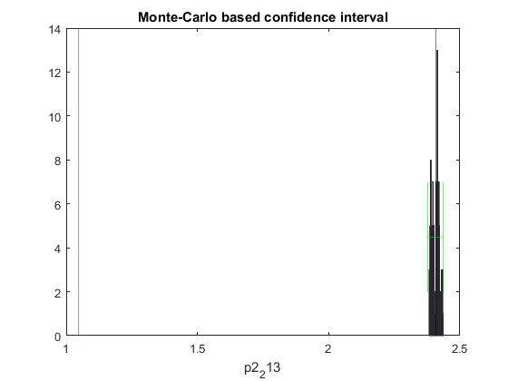
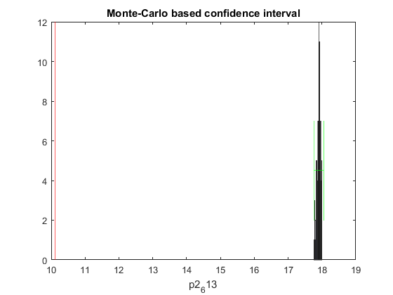
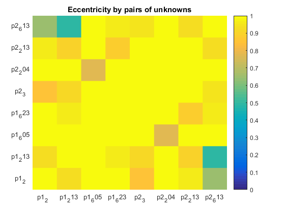

Compute AIC and BIC
Contents
Load default setting and configure experimental data
SBL_config_defaults; sbl_config.data_dir_name = pwd; sbl_config.data_file_name = 'toggleSwitch_1.csv'; sbl_config.exp_idx=1:3; sbl_config.dict_generator = str2func('build_toggle_switch_dict'); sbl_config.estimate_structure_only=0;
Generate multiple models by enforcing different sparsity coeficients.
sbl_config.sparsity_vec = [0.05 0.1 0.15 0.2 ]; MODELS=SBL_gen_model_family(sbl_config);
25-Sep-2019 20:56:46 | loop iter: 1, generating SBL data 25-Sep-2019 20:56:46 | file: toggleSwitch_1.csv was successfully imported | 3 experiments was selected 25-Sep-2019 20:56:46 | loop iter: 1, running SBL runnging sparsity case: 1/4 runnging SBL on state: 1/2 SBL iter: 1/10 took 2.41589 sec SBL iter: 2/10 took 1.55526 sec SBL iter: 3/10 took 1.12121 sec SBL iter: 4/10 took 1.41586 sec SBL iter: 5/10 took 1.62876 sec SBL iter: 6/10 took 0.784505 sec SBL iter: 7/10 took 1.94391 sec SBL iter: 8/10 took 1.736 sec SBL iter: 9/10 took 0.719302 sec SBL iter: 10/10 took 0.743301 sec runnging SBL on state: 2/2 SBL iter: 1/10 took 0.777009 sec SBL iter: 2/10 took 0.769495 sec SBL iter: 3/10 took 0.858944 sec SBL iter: 4/10 took 0.772168 sec SBL iter: 5/10 took 0.827744 sec SBL iter: 6/10 took 0.79711 sec SBL iter: 7/10 took 0.864116 sec SBL iter: 8/10 took 0.827546 sec SBL iter: 9/10 took 0.773599 sec SBL iter: 10/10 took 0.7969 sec Elapsed time is 0.844489 seconds. state: x_1 zero_th: 0.00386004 dict_num: 5 (0.55371%) state: x_2 zero_th: 0.00715729 dict_num: 5 (0.55371%) ODE simulation OK ...
Compute AIC and RANK parameters
Adjust the number of bootstrap rounds.
[AIC,BIC,Chi2,NDATA,NPARS]=SBL_get_AIC_BIC(MODELS); [~,index]=sort(AIC); sbl_config.conf_ntrials=100; RIdent4SBL(MODELS,sbl_config,index(1))
***********************************
AMIGO2, Copyright @CSIC
AMIGO2_R2017a [March 2017]
***********************************
*Date: 25-Sep-2019
------>Pre processing....this may take a few seconds.
------>Checking inputs....
n_exp
NLObs
n_obs
obs_names
obs
index_observables
ts_type
t_in
ts_0
n_s
max_ns
t_s
error_data
exp_data
missing_data
nanfilter
u_interp
...        